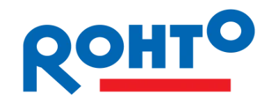

Loyiha haqida
CancerAI — bachadon bo‘yni saratoni bilan bog‘liq sitologik (Pap-test) tasvirlarni sun’iy intellekt yordamida tahlil qiluvchi platforma. Maqsad — erta o‘zgarishlarni tezroq ko‘rishga yordam berish, natijani sodda tilda tushuntirish va foydalanuvchini shifokor ko‘rigiga tayyorlash. Platforma yakuniy tashxis qo‘ymaydi — natijalar shifokor xulosasini almashtirmaydi.
Sun’iy intellekt yordamida erta aniqlashga bir qadam
Biz ishonamiz: sifatli tibbiy yordam tushunishdan boshlanadi. CancerAI tasvirlarni avtomatik tahlil qilib, natijani ehtimollik (%) ko‘rinishida beradi va har bir natijaga qisqa, tushunarli izoh qo‘shadi. Bu yondashuv erta profilaktika va o‘z vaqtida tekshiruvdan o‘tishga motivatsiya beradi.


Ishonchli va tushunarli AI yordamchi
Bachadon bo‘yni saratoni ko‘pincha HPV bilan bog‘liq bo‘ladi va hujayra o‘zgarishlari odatda sekin rivojlanadi. Skrining (HPV/Pap test) erta bosqichda o‘zgarishlarni topishga yordam beradi. CancerAI esa natijani tez tahlil qilib, foydalanuvchiga tushunarli tarzda ko‘rsatadi.
Fenotip sinflari
NILM, LSIL, HSIL va SCC bo‘yicha ehtimollik natijasi
Model/algoritmlar
Turli yondashuvlar: CNN va Transformer asosidagi modellar
Natija formati
Jadval + qisqa izoh + keyingi qadam bo‘yicha tavsiya
Platforma yo‘nalishlari
CancerAI bir nechta yo‘nalishlarni birlashtiradi: tibbiy skrining, sun’iy intellekt va foydalanuvchiga tushunarli izoh.
Ilmiy asos va ochiq yondashuv
Platforma konsepsiyasi ilmiy manbalar va tadqiqot metodologiyasiga tayangan. Bizning maqsad — tibbiy qaror qabul qilish jarayoniga yordam beradigan qulay va tushunarli vosita yaratish.


